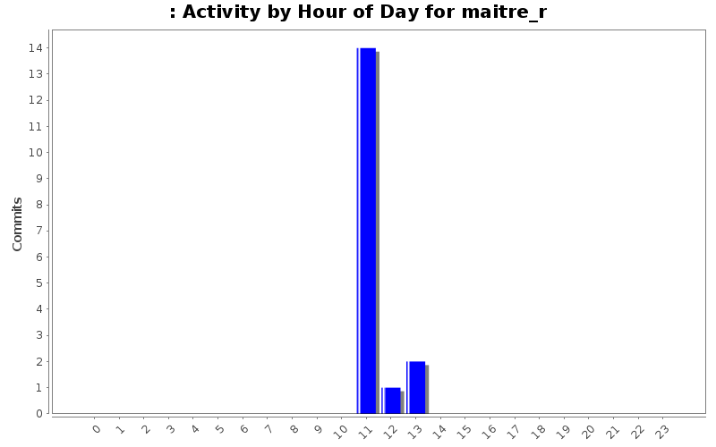
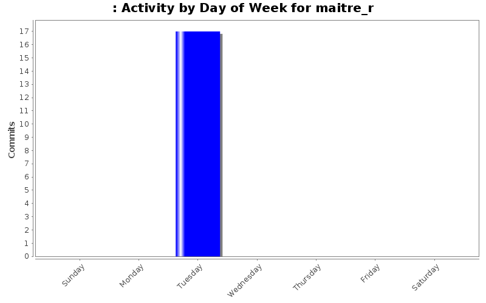
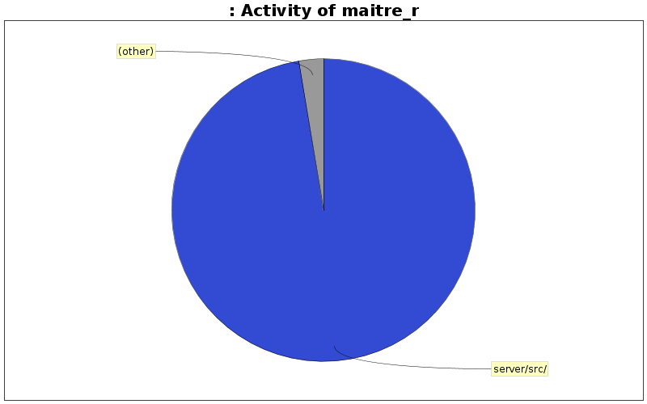

| Directory | Changes | Lines of Code | Lines per Change |
|---|---|---|---|
| Totals | 17 (100.0%) | 234 (100.0%) | 13.7 |
| server/src/ | 16 (94.1%) | 228 (97.4%) | 14.2 |
| server/include/ | 1 (5.9%) | 6 (2.6%) | 6.0 |

modif fonctions plv et pin
44 lines of code changed in 2 files:
correction ppo
23 lines of code changed in 1 file:
add moitier fonc
167 lines of code changed in 14 files: